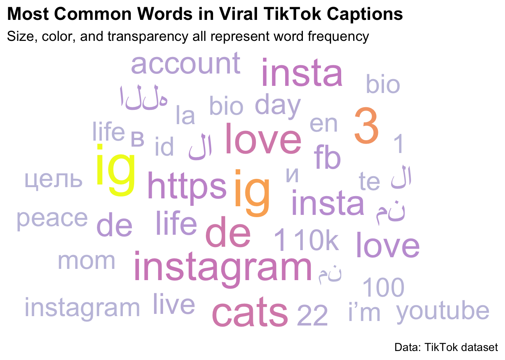
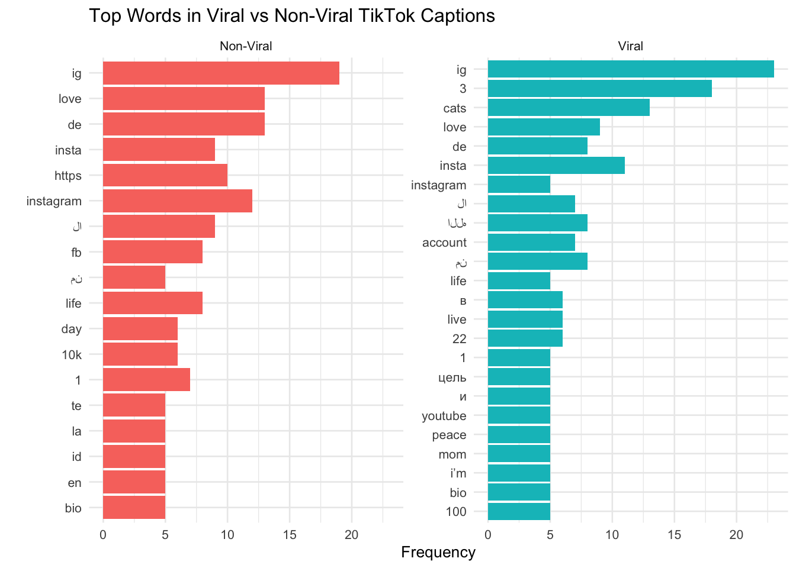

TikTok is often described as a platform built for entertainment (short videos, trends, humor, and creativity). However, in recent years, it has also become an important space for sharing information, news, and educational content. Many users now turn to TikTok not just to be entertained, but to stay informed about current events and social issues. This shift made us curious about how people engage with different types of content on the platform and whether entertainment and informational videos are consumed in the same way. We were especially interested in whether engagement patterns vary across different groups of creators and audiences. While younger users may gravitate toward creative or lifestyle content, others increasingly use TikTok as a news source. Understanding these differences matters because TikTok plays a growing role in shaping how people receive information and form opinions. By studying engagement patterns across content types, we aim to better understand TikTok’s broader impact on media consumption and online interaction.
Research Question
This project examines what drives video popularity on TikTok and how engagement varies across different types of content. In particular, we focus on which factors are most closely linked to higher engagement, such as posting frequency, hashtag use, music choice, video length, and follower count. We also compare entertainment-focused videos with informational or news-related content to understand how audiences respond to each type. Through this analysis, we aim to identify broader patterns in how users interact with TikTok content and to better understand how the platform shapes the way information is shared and consumed on social media.
Background
Previous research on social media platforms suggests that engagement is not driven by a single factor, but rather by a combination of content characteristics, creator behavior, and audience dynamics. On TikTok specifically, the “For You Page” algorithm plays a central role in determining visibility, often amplifying content from smaller creators and allowing videos to reach large audiences regardless of follower count. Prior studies and journalistic reporting have highlighted the importance of timing, consistency, and content niche in gaining traction on the platform.
Additionally, TikTok differs from other social media platforms in how quickly content can go viral and how engagement is distributed. Unlike platforms where popularity is closely tied to follower count, TikTok allows newer or less established creators to achieve high engagement. This makes it especially interesting to study which features are associated with success and whether informational content performs differently than entertainment content.
Data
TikTok data collection article (https://towardsdatascience.com/how-to-collect-data-from-tiktok-tutorial-ab848b40d191) TikTok API (https://github.com/davidteather/TikTok-Api) Top TikTokers
For the collection of the top TikTokers, we use the simple webscraping module on Python BeautifulSoup (https://www.crummy.com/software/BeautifulSoup/bs4/doc/). For the webscraping, we found information for the first 6 columns of our dataset from InflueceGrid (https://www.influencegrid.com/tiktok-influencers). The remaining information was manually entered, citing sources such as Famous Birthdays (https://www.famousbirthdays.com/) and TikTok (https://www.tiktok.com/en/). This dataset top-250-tiktokers.csv looks into the demographics of the top 250 TikTokers and is used to explore possible commonalities of the top influencers on the platform.
The sample from 1000 tiktok users profile dataset scrapped from brightdata.com (http://brightdata.com), extract detailed public profile information, including account names, follower counts, and engagement metrics. Popular use cases include sentiment analysis, brand monitoring, and influencer marketing.
Data Collection
Data were collected using a combination of automated web scraping and manual data entry. Web scraping was conducted using Python libraries such as BeautifulSoup to extract publicly available information from TikTok-related websites. Manual data entry was used when information was not easily accessible through scraping, particularly for demographic details of top creators.
Data Acquisition
All data used in this project come from publicly available sources. No private or restricted user information was collected. Data were cleaned and organized to ensure consistency across variables, such as standardizing engagement metrics and categorizing content types.
Data Understanding
Our datasets include both creator-level variables (such as follower count, verification status, and demographics) and engagement metrics (likes, engagement rate, posting frequency). Because engagement variables are often highly skewed, many of our visualizations use log scales to better represent the distribution and highlight underlying patterns.
Data Insights
Across our analyses, several clear patterns emerged that directly address our research question about which factors are most strongly associated with higher engagement on TikTok.
One of the most consistent findings is the importance of timing. Videos posted during the evening, particularly between 5 PM and 10 PM, tend to receive noticeably higher engagement rates. This effect is even stronger on weekends, with Friday and Saturday nights standing out as peak periods for interaction. This suggests that engagement is closely tied to when users are most active on the platform, highlighting timing as a key factor in video performance.
In addition to timing, language also plays a role in shaping engagement. Videos posted in Spanish, Italian, Russian, and Portuguese often show higher engagement distributions compared to English-language content. This may reflect differences in audience size, competition levels, or community dynamics across linguistic groups, further emphasizing that engagement is influenced by the context in which content is shared.
Creator size is another important factor. Our results show that smaller creators tend to have higher engagement rates than larger, more established accounts. While high-profile creators typically accumulate more total likes due to their large audiences, their engagement is often spread across many followers and therefore less concentrated.
This pattern appears again when comparing verified and non-verified accounts. Non-verified creators frequently exhibit higher engagement rates, suggesting that smaller or niche creators may foster stronger audience connections. These findings challenge the assumption that follower count or verification status alone drives engagement and instead suggest that audience interaction and relatability play a major role.
ggplot(hook_words, aes(label = word, size = n, color = n, alpha = n)) +geom_text_wordcloud(rm_outliers =TRUE,eccentricity =1.5,grid_size =10,shape ="circle" ) +scale_size_area(max_size =20, name ="Word Frequency") +scale_alpha(range =c(0.3, 1),name ="Frequency (Transparency)") +scale_color_viridis_c(option ="C", name ="Frequency (Color)") +guides(size =guide_legend(),color =guide_colorbar(),alpha =guide_legend() ) +labs(title ="Most Common Words in Viral TikTok Captions",subtitle ="Size, color, and transparency all represent word frequency",caption ="Data: TikTok dataset",x =NULL,y =NULL ) +theme_minimal(base_size =14) +theme(plot.title =element_text(face ="bold", size =18),legend.position ="right",panel.grid =element_blank())

Code
ggplot(hook_words, aes(n, fct_reorder(word, n), fill = is_viral)) +geom_col(show.legend =FALSE) +facet_wrap(~is_viral, scales ="free_y") +labs(title ="Top Words in Viral vs Non-Viral TikTok Captions",x ="Frequency",y ="" ) +theme_minimal(base_size =10)

Code
hcwc <- hook_words %>%hchart("wordcloud",hcaes(name = word, weight = n),name ="Viral Word Frequency" ) %>%hc_title(text ="Most Common Words in Viral TikTok Captions") %>%hc_tooltip(pointFormat ="{point.name}: {point.weight}") %>%hc_colorAxis(stops =color_stops(10))
Content type also significantly affects engagement, which directly connects to our comparison between entertainment and informational content. Lifestyle and personal videos consistently perform well, indicating that audiences respond strongly to content that feels relatable or authentic. Among top TikTokers, videos related to art, media, and content houses show particularly high engagement, likely due to their visual appeal and collaborative nature.
genre <- tiktoker |>separate_rows(Genre, sep =",\\s*") |>mutate(Genre =str_trim(Genre))# Function for converting K/M numbersconvert_number <-function(x) { x <-tolower(x) # normalize lowercase x <-str_replace_all(x, ",", "") # remove commas x <-str_replace_all(x, "views", "") # remove words x <-str_replace_all(x, "%", "") # remove % x <-str_trim(x) # trim spacescase_when(str_detect(x, "k$") ~as.numeric(str_remove(x, "k")) *1e3,str_detect(x, "m$") ~as.numeric(str_remove(x, "m")) *1e6, x ==""~NA_real_,TRUE~suppressWarnings(as.numeric(x)) )}# Apply to both Views and Engagementgenre <- genre %>%mutate(views =convert_number(Views),engagement =convert_number(Engagement) )df_genre <- genre %>%group_by(Genre) %>%summarise(avg_views =mean(views, na.rm =TRUE),avg_engagement =mean(engagement, na.rm =TRUE),n =n() ) %>%arrange(desc(avg_engagement))# Plotly interactive bar chartp <-plot_ly(df_genre,y =~Genre,x =~avg_engagement,type ="bar",hoverinfo ="text",text =~paste("Genre:", Genre,"<br>Avg Views:", scales::comma(avg_views),"<br>Avg Engagement:", scales::comma(avg_engagement),"<br>Creators:", n )) %>%layout(title ="Average TikTok Views by Genre",yaxis =list(title ="Genre"),xaxis =list(title ="Average Engagement"),hoverlabel =list(bgcolor ="white") )p
Interestingly, being famous prior to joining TikTok does not appear to provide a clear advantage. Prior fame is not a strong predictor of engagement or virality, reinforcing the idea that TikTok’s algorithm allows creators to succeed based on content performance rather than existing status.
Does Famous before TikTok matter for becoming viral on TikTok?
Code
convert_number <-function(x) { x <-tolower(x) # normalize lowercase x <-str_replace_all(x, ",", "") # remove commas x <-str_replace_all(x, "views", "") # remove words x <-str_replace_all(x, "%", "") # remove % x <-str_trim(x) # trim spacescase_when(str_detect(x, "k$") ~as.numeric(str_remove(x, "k")) *1e3,str_detect(x, "m$") ~as.numeric(str_remove(x, "m")) *1e6, x ==""~NA_real_,TRUE~suppressWarnings(as.numeric(x)) )}tiktoker <- tiktoker |>mutate(views =convert_number(Views),engagement =convert_number(Engagement),followers =convert_number(Followers),likes =convert_number(Likes) )famous <- tiktoker |>mutate(Famous =ifelse(Famous ==1, "Famous", "Not Famous")) |>group_by(Famous) |>summarise(avg_engagement =mean(engagement, na.rm =TRUE)) p <-plot_ly( famous,labels =~Famous,values =~avg_engagement,type ="pie",hole =0.5,textinfo ="label+percent",hoverinfo ="text",text =~paste0( Famous, "<br>","Average Engagement: ", scales::comma(avg_engagement) )) %>%layout(title ="Interactive Donut — Famous vs Non-Famous Engagement") p
Demographic factors show more mixed effects. Age appears to be associated with engagement, with rates generally peaking among creators in their twenties and declining as age increases. This trend may reflect audience preferences or differences in content style across age groups. Gender, however, does not emerge as a meaningful predictor of engagement, suggesting that TikTok audiences respond more to content characteristics than to the creator’s gender.
Finally, posting frequency plays a crucial role in long-term popularity. Creators who post more consistently tend to accumulate higher total likes over time, even if individual videos do not go viral. While some creators achieve success through a small number of highly viral videos, our findings suggest that sustained posting is a more reliable strategy for building engagement and visibility on the platform. This reinforces the idea that TikTok popularity is often built through consistency rather than one-time success.
Conclusion/Big Picture
Overall, our findings suggest that TikTok engagement is shaped by a combination of consistency, timing, content type, and audience connection rather than traditional measures of popularity like prior fame or verification status. Smaller creators often outperform larger ones in engagement rate, and lifestyle or personal content tends to resonate most with audiences. TikTok’s algorithm appears to reward regular posting and authentic interaction, allowing a wide range of creators to succeed.
These results highlight TikTok’s unique role as both an entertainment platform and an information-sharing space. As more users turn to TikTok for news and learning, understanding these engagement patterns becomes increasingly important for studying how media consumption is evolving.
For potential content creators, here are the tips that we learned based on the pattern we observed that are more likely to make your videos viral. First, post during peak evening hours, especially during the weekends. Also, focus on relatable, lifestyle-based content and visually engaging topics. Try completing and optimizing the profile, including furnishing the bio and linking other social media accounts there, like Instagram.
Limitations and Future Work
This project has several limitations. First, our datasets rely on publicly available information and may not capture all factors influencing engagement, such as watch time or algorithmic promotion. Second, the data represent a snapshot in time and may not fully reflect changes in trends or platform policies.
Future work could expand the analysis to include video-level data, sentiment analysis of comments, or longitudinal trends over time. Further research could also focus specifically on informational or news-related content to better understand TikTok’s role in shaping public knowledge and political awareness.
---title: "Report"format: html: code-fold: true---## MotivationTikTok is often described as a platform built for entertainment (short videos, trends, humor, and creativity).However, in recent years, it has also become an important space for sharing information, news, and educational content.Many users now turn to TikTok not just to be entertained, but to stay informed about current events and social issues.This shift made us curious about how people engage with different types of content on the platform and whether entertainment and informational videos are consumed in the same way.We were especially interested in whether engagement patterns vary across different groups of creators and audiences.While younger users may gravitate toward creative or lifestyle content, others increasingly use TikTok as a news source.Understanding these differences matters because TikTok plays a growing role in shaping how people receive information and form opinions.By studying engagement patterns across content types, we aim to better understand TikTok’s broader impact on media consumption and online interaction.## Research QuestionThis project examines what drives video popularity on TikTok and how engagement varies across different types of content.In particular, we focus on which factors are most closely linked to higher engagement, such as posting frequency, hashtag use, music choice, video length, and follower count.We also compare entertainment-focused videos with informational or news-related content to understand how audiences respond to each type.Through this analysis, we aim to identify broader patterns in how users interact with TikTok content and to better understand how the platform shapes the way information is shared and consumed on social media.## BackgroundPrevious research on social media platforms suggests that engagement is not driven by a single factor, but rather by a combination of content characteristics, creator behavior, and audience dynamics.On TikTok specifically, the “For You Page” algorithm plays a central role in determining visibility, often amplifying content from smaller creators and allowing videos to reach large audiences regardless of follower count.Prior studies and journalistic reporting have highlighted the importance of timing, consistency, and content niche in gaining traction on the platform.Additionally, TikTok differs from other social media platforms in how quickly content can go viral and how engagement is distributed.Unlike platforms where popularity is closely tied to follower count, TikTok allows newer or less established creators to achieve high engagement.This makes it especially interesting to study which features are associated with success and whether informational content performs differently than entertainment content.## DataTikTok data collection article (https://towardsdatascience.com/how-to-collect-data-from-tiktok-tutorial-ab848b40d191) TikTok API (https://github.com/davidteather/TikTok-Api) Top TikTokersFor the collection of the top TikTokers, we use the simple webscraping module on Python BeautifulSoup (https://www.crummy.com/software/BeautifulSoup/bs4/doc/).For the webscraping, we found information for the first 6 columns of our dataset from InflueceGrid (https://www.influencegrid.com/tiktok-influencers).The remaining information was manually entered, citing sources such as Famous Birthdays (https://www.famousbirthdays.com/) and TikTok (https://www.tiktok.com/en/).This dataset top-250-tiktokers.csv looks into the demographics of the top 250 TikTokers and is used to explore possible commonalities of the top influencers on the platform.The sample from 1000 tiktok users profile dataset scrapped from brightdata.com (http://brightdata.com), extract detailed public profile information, including account names, follower counts, and engagement metrics.Popular use cases include sentiment analysis, brand monitoring, and influencer marketing.### Data CollectionData were collected using a combination of automated web scraping and manual data entry.Web scraping was conducted using Python libraries such as BeautifulSoup to extract publicly available information from TikTok-related websites.Manual data entry was used when information was not easily accessible through scraping, particularly for demographic details of top creators.### Data AcquisitionAll data used in this project come from publicly available sources.No private or restricted user information was collected.Data were cleaned and organized to ensure consistency across variables, such as standardizing engagement metrics and categorizing content types.### Data UnderstandingOur datasets include both creator-level variables (such as follower count, verification status, and demographics) and engagement metrics (likes, engagement rate, posting frequency).Because engagement variables are often highly skewed, many of our visualizations use log scales to better represent the distribution and highlight underlying patterns.## Data InsightsAcross our analyses, several clear patterns emerged that directly address our research question about which factors are most strongly associated with higher engagement on TikTok.One of the most consistent findings is the importance of timing.Videos posted during the evening, particularly between 5 PM and 10 PM, tend to receive noticeably higher engagement rates.This effect is even stronger on weekends, with Friday and Saturday nights standing out as peak periods for interaction.This suggests that engagement is closely tied to when users are most active on the platform, highlighting timing as a key factor in video performance.In addition to timing, language also plays a role in shaping engagement.Videos posted in Spanish, Italian, Russian, and Portuguese often show higher engagement distributions compared to English-language content.This may reflect differences in audience size, competition levels, or community dynamics across linguistic groups, further emphasizing that engagement is influenced by the context in which content is shared.Creator size is another important factor.Our results show that smaller creators tend to have higher engagement rates than larger, more established accounts.While high-profile creators typically accumulate more total likes due to their large audiences, their engagement is often spread across many followers and therefore less concentrated.This pattern appears again when comparing verified and non-verified accounts.Non-verified creators frequently exhibit higher engagement rates, suggesting that smaller or niche creators may foster stronger audience connections.These findings challenge the assumption that follower count or verification status alone drives engagement and instead suggest that audience interaction and relatability play a major role.```{r}library(tidyverse)library(janitor)library(scales)library(stringr)df <-read_csv("data/raw/tiktok.csv") |>clean_names()df2 <-read_csv("data/raw/tiktok_merged_data_deduplicated.csv")library(tidyverse)library(cld2)df_clean <- df2 %>%mutate(engagement_rate = (likes + comments + shares) / plays,detected_lang = cld2::detect_language(description, plain_text =TRUE) ) %>%filter(!is.na(detected_lang),!is.na(engagement_rate), engagement_rate <5)top_langs <- df_clean %>%count(detected_lang, sort =TRUE) %>%slice_head(n =10)df_lang_plot <- df_clean %>%filter(detected_lang %in% top_langs$detected_lang)# --- Language label mapping ---lang_labels <-c("es"="Spanish","fr"="French","ru"="Russian","pt"="Portuguese","it"="Italian","en"="English","no"="Norwegian","sr"="Serbian","xx-Qaai"="Undetermined","de"="German")# --- Plot ---ggplot(df_lang_plot,aes(x =reorder(detected_lang, engagement_rate, FUN = median),y = engagement_rate)) +geom_violin(trim =TRUE, alpha =0.6, fill ="#BDD7EE", color ="gray40") +geom_boxplot(width =0.15, outlier.shape =NA, fill ="white", color ="black") +stat_summary(fun = median, geom ="point", size =2.8, color ="black") +scale_x_discrete(labels = lang_labels) +labs(title ="Engagement Rate by Detected Language (Top 10)",x ="Language",y ="Engagement Rate" ) +theme_minimal(base_size =16) +theme(plot.title =element_text(size =20, face ="bold", hjust =0.5),axis.text.x =element_text(angle =35, hjust =1, size =13),axis.text.y =element_text(size =13),panel.grid.minor =element_blank() )``````{r}library(tidyverse)library(lubridate)df_time <- df2 %>%mutate(posted_time =as_datetime(create_time),dow =wday(posted_time, label =TRUE, week_start =1),hour =hour(posted_time),engagement = (likes + comments + shares) /pmax(plays, 1) ) %>%filter(!is.na(dow),!is.na(hour), engagement >=0, engagement <1 )df_time_summary <- df_time %>%group_by(dow, hour) %>%summarise(avg_eng =mean(engagement, na.rm =TRUE),.groups ="drop" )ggplot(df_time_summary,aes(x = hour, y = dow)) +geom_point(aes(size = avg_eng, color = avg_eng),alpha =0.85) +scale_color_viridis_c(option ="C") +scale_size(range =c(3, 12)) +scale_x_continuous(breaks =0:23) +labs(title ="Engagement by Posting Time",subtitle ="Bubble size & color show average engagement rate",x ="Hour of Day",y ="Day of Week",color ="Avg Engagement",size ="Avg Engagement" ) +theme_minimal(base_size =15) +theme(plot.title =element_text(size =20, face ="bold", hjust =0.5),plot.subtitle =element_text(size =13, hjust =0.5),axis.text.x =element_text(angle =45, hjust =1) )``````{r}library(tidyverse)library(janitor)library(ggridges)library(ggtext)library(scales)library(fmsb)library(tidytext)library(dplyr)library(ggplot2)library(plotly)tiktok <-read_csv("data/raw/tiktok.csv") %>%clean_names() %>%select( followers, likes, videos_count, awg_engagement_rate, like_engagement_rate, comment_engagement_rate, predicted_lang, region, biography, signature, top_videos ) %>%mutate(across(where(is.character), na_if, "")) %>%drop_na() %>%distinct()tiktok <- tiktok %>%mutate(is_viral =ifelse(awg_engagement_rate >median(awg_engagement_rate), "Viral", "Non-Viral")) %>%mutate(is_viral =factor(is_viral, levels =c("Non-Viral", "Viral")))``````{r}library(ggwordcloud)library(highcharter)custom_stop <-c("tiktok", "video", "follow")hook_words <- tiktok |>select(is_viral, signature) |>unnest_tokens(word, signature) |>anti_join(stop_words, by="word") |>filter(!word %in% custom_stop) |>group_by(is_viral, word) |>summarise(n =n(), .groups="drop") |>group_by(is_viral) |>slice_max(n, n =15)ggplot(hook_words, aes(label = word, size = n)) +geom_text_wordcloud() +scale_size_area(max_size =20) +theme_minimal() +labs(title ="Word Cloud: Viral Videos (Caption Language)")ggplot(hook_words, aes(label = word, size = n, color = n, alpha = n)) +geom_text_wordcloud(rm_outliers =TRUE,eccentricity =1.5,grid_size =10,shape ="circle" ) +scale_size_area(max_size =20, name ="Word Frequency") +scale_alpha(range =c(0.3, 1),name ="Frequency (Transparency)") +scale_color_viridis_c(option ="C", name ="Frequency (Color)") +guides(size =guide_legend(),color =guide_colorbar(),alpha =guide_legend() ) +labs(title ="Most Common Words in Viral TikTok Captions",subtitle ="Size, color, and transparency all represent word frequency",caption ="Data: TikTok dataset",x =NULL,y =NULL ) +theme_minimal(base_size =14) +theme(plot.title =element_text(face ="bold", size =18),legend.position ="right",panel.grid =element_blank())ggplot(hook_words, aes(n, fct_reorder(word, n), fill = is_viral)) +geom_col(show.legend =FALSE) +facet_wrap(~is_viral, scales ="free_y") +labs(title ="Top Words in Viral vs Non-Viral TikTok Captions",x ="Frequency",y ="" ) +theme_minimal(base_size =10)hcwc <- hook_words %>%hchart("wordcloud",hcaes(name = word, weight = n),name ="Viral Word Frequency" ) %>%hc_title(text ="Most Common Words in Viral TikTok Captions") %>%hc_tooltip(pointFormat ="{point.name}: {point.weight}") %>%hc_colorAxis(stops =color_stops(10))```Content type also significantly affects engagement, which directly connects to our comparison between entertainment and informational content.Lifestyle and personal videos consistently perform well, indicating that audiences respond strongly to content that feels relatable or authentic.Among top TikTokers, videos related to art, media, and content houses show particularly high engagement, likely due to their visual appeal and collaborative nature.# What Genres Perform The Best?```{r}tiktoker <-read_csv("./data/processed/top-250-tiktokers.csv")``````{r}genre <- tiktoker |>separate_rows(Genre, sep =",\\s*") |>mutate(Genre =str_trim(Genre))# Function for converting K/M numbersconvert_number <-function(x) { x <-tolower(x) # normalize lowercase x <-str_replace_all(x, ",", "") # remove commas x <-str_replace_all(x, "views", "") # remove words x <-str_replace_all(x, "%", "") # remove % x <-str_trim(x) # trim spacescase_when(str_detect(x, "k$") ~as.numeric(str_remove(x, "k")) *1e3,str_detect(x, "m$") ~as.numeric(str_remove(x, "m")) *1e6, x ==""~NA_real_,TRUE~suppressWarnings(as.numeric(x)) )}# Apply to both Views and Engagementgenre <- genre %>%mutate(views =convert_number(Views),engagement =convert_number(Engagement) )df_genre <- genre %>%group_by(Genre) %>%summarise(avg_views =mean(views, na.rm =TRUE),avg_engagement =mean(engagement, na.rm =TRUE),n =n() ) %>%arrange(desc(avg_engagement))# Plotly interactive bar chartp <-plot_ly(df_genre,y =~Genre,x =~avg_engagement,type ="bar",hoverinfo ="text",text =~paste("Genre:", Genre,"<br>Avg Views:", scales::comma(avg_views),"<br>Avg Engagement:", scales::comma(avg_engagement),"<br>Creators:", n )) %>%layout(title ="Average TikTok Views by Genre",yaxis =list(title ="Genre"),xaxis =list(title ="Average Engagement"),hoverlabel =list(bgcolor ="white") )p```Interestingly, being famous prior to joining TikTok does not appear to provide a clear advantage.Prior fame is not a strong predictor of engagement or virality, reinforcing the idea that TikTok’s algorithm allows creators to succeed based on content performance rather than existing status.# Does Famous before TikTok matter for becoming viral on TikTok?```{r}convert_number <-function(x) { x <-tolower(x) # normalize lowercase x <-str_replace_all(x, ",", "") # remove commas x <-str_replace_all(x, "views", "") # remove words x <-str_replace_all(x, "%", "") # remove % x <-str_trim(x) # trim spacescase_when(str_detect(x, "k$") ~as.numeric(str_remove(x, "k")) *1e3,str_detect(x, "m$") ~as.numeric(str_remove(x, "m")) *1e6, x ==""~NA_real_,TRUE~suppressWarnings(as.numeric(x)) )}tiktoker <- tiktoker |>mutate(views =convert_number(Views),engagement =convert_number(Engagement),followers =convert_number(Followers),likes =convert_number(Likes) )famous <- tiktoker |>mutate(Famous =ifelse(Famous ==1, "Famous", "Not Famous")) |>group_by(Famous) |>summarise(avg_engagement =mean(engagement, na.rm =TRUE)) p <-plot_ly( famous,labels =~Famous,values =~avg_engagement,type ="pie",hole =0.5,textinfo ="label+percent",hoverinfo ="text",text =~paste0( Famous, "<br>","Average Engagement: ", scales::comma(avg_engagement) )) %>%layout(title ="Interactive Donut — Famous vs Non-Famous Engagement") p```Demographic factors show more mixed effects.Age appears to be associated with engagement, with rates generally peaking among creators in their twenties and declining as age increases.This trend may reflect audience preferences or differences in content style across age groups.Gender, however, does not emerge as a meaningful predictor of engagement, suggesting that TikTok audiences respond more to content characteristics than to the creator’s gender.```{r}library(dplyr)library(purrr)df_bubble <- tiktoker %>%mutate(Famous =ifelse(Famous ==1, "Famous", "Not Famous") )df_smooth <- df_bubble %>%filter(!is.na(Age), !is.na(engagement)) %>%group_by(Gender) %>%group_modify(~ { fit <-loess(engagement ~ Age, data = .x, span =0.75)tibble(Age =sort(.x$Age),engagement =predict(fit, newdata =data.frame(Age =sort(.x$Age))) ) }) %>%ungroup()plot_ly( df_bubble,x =~Age,y =~engagement,color =~Gender,type ="scatter",mode ="markers",sizes =500,text =~paste0("User: ", Username,"<br>Age: ", scales::comma(Age),"<br>Engagement: ", scales::comma(engagement),"<br>Gender: ", Gender ),hoverinfo ="text") %>%add_trace(data = df_smooth,x =~Age,y =~engagement,color =~Gender,type ="scatter",mode ="lines",inherit =FALSE,line =list(width =3),showlegend =TRUE ) %>%layout(title ="Age × Engagement with Smoothed Trends by Gender",yaxis =list(title ="Engagement"),xaxis =list(title ="Age") )```Finally, posting frequency plays a crucial role in long-term popularity.Creators who post more consistently tend to accumulate higher total likes over time, even if individual videos do not go viral.While some creators achieve success through a small number of highly viral videos, our findings suggest that sustained posting is a more reliable strategy for building engagement and visibility on the platform.This reinforces the idea that TikTok popularity is often built through consistency rather than one-time success.## Conclusion/Big PictureOverall, our findings suggest that TikTok engagement is shaped by a combination of consistency, timing, content type, and audience connection rather than traditional measures of popularity like prior fame or verification status.Smaller creators often outperform larger ones in engagement rate, and lifestyle or personal content tends to resonate most with audiences.TikTok’s algorithm appears to reward regular posting and authentic interaction, allowing a wide range of creators to succeed.These results highlight TikTok’s unique role as both an entertainment platform and an information-sharing space.As more users turn to TikTok for news and learning, understanding these engagement patterns becomes increasingly important for studying how media consumption is evolving.For potential content creators, here are the tips that we learned based on the pattern we observed that are more likely to make your videos viral.First, post during peak evening hours, especially during the weekends.Also, focus on relatable, lifestyle-based content and visually engaging topics.Try completing and optimizing the profile, including furnishing the bio and linking other social media accounts there, like Instagram.## Limitations and Future WorkThis project has several limitations.First, our datasets rely on publicly available information and may not capture all factors influencing engagement, such as watch time or algorithmic promotion.Second, the data represent a snapshot in time and may not fully reflect changes in trends or platform policies.Future work could expand the analysis to include video-level data, sentiment analysis of comments, or longitudinal trends over time.Further research could also focus specifically on informational or news-related content to better understand TikTok’s role in shaping public knowledge and political awareness.## Presentation SlidesYou can download the full slide deck here:[Download Presentation Slides](slides_videos/Stat%20212%20Project%20Prototype.pdf)## Presentation VideoYou can download the full presentation video here:[Download Presentation Video](https://drive.google.com/file/d/1Ij9EWW1ThvbA27t8NdkzPJdWwhzta4NO/view?usp=sharing)